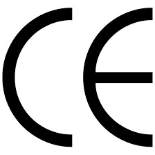

Aslan Teşvik Danışmanlık olarak, işletmelerin Avrupa Birliği (AB) pazarında ürünlerini serbestçe
dolaştırabilmeleri ve yasal gerekliliklere uygun üretim yapabilmeleri için CE Belgelendirme
sürecinde kapsamlı danışmanlık hizmetleri sunuyoruz. CE belgesi, ürünlerin Avrupa Birliği’nin sağlık,
güvenlik ve çevre koruma standartlarına uygun olduğunu gösteren ve AB pazarında serbest
dolaşımını sağlayan bir işaretleme sistemidir. Bu belge, Avrupa Ekonomik Alanı (EEA) içindeki tüm ülkelerde
ürünlerin yasal olarak satılabilmesi için zorunlu kılınmıştır.

CE Belgesi Nedir?
CE Belgesi, "Conformité Européenne" (Avrupa’ya Uygunluk) anlamına gelir ve ürünlerin ilgili AB
direktiflerine ve düzenlemelerine uygun olarak üretildiğini gösterir. CE işareti, bir ürünün AB güvenlik,
sağlık ve çevre koruma gereksinimlerini karşıladığını belirtir ve bu işarete sahip ürünlerin AB içindeki
ülkelerde serbestçe satılmasına izin verir.
CE belgesi almak, bir ürünün güvenlik ve performans standartlarını karşıladığını ve tüketiciler için güvenli
olduğunu belgeleyen bir süreçtir. Bu süreç, üreticilerin, ithalatçıların ve
distribütörlerin sorumluluklarını yerine getirmelerini ve ürünlerinin AB pazarında yasal olarak
satılabilmesini sağlar.
CE Belgesi Hangi Ürünler İçin Gereklidir?
CE Belgesi, AB direktiflerine tabi olan birçok ürün için zorunludur. CE işareti gerektiren ürünler genellikle
şunlardır:
- Elektrikli ve Elektronik Cihazlar: Ev aletleri, bilgisayarlar, telekomünikasyon ekipmanları ve
diğer elektronik ürünler.
- Tıbbi Cihazlar: Hastane ekipmanları, cerrahi aletler ve diğer tıbbi cihazlar.
- Makinalar: Endüstriyel makineler, tarım makineleri, iş makineleri ve benzeri ekipmanlar.
- Oyuncaklar: Çocuk oyuncakları ve oyun ekipmanları.
- Kişisel Koruyucu Donanımlar: Kasklar, eldivenler, gözlükler ve diğer koruyucu donanımlar.
- Binalarda Kullanılan Malzemeler: İnşaat malzemeleri, kapılar, pencereler, asansörler ve diğer
yapı ürünleri.
Bu ürünlerin yanı sıra, CE belgesi gerektiren başka birçok ürün grubu bulunmaktadır. Üreticilerin,
ürünlerinin hangi AB direktifine tabi olduğunu ve bu direktife göre hangi gereksinimlerin karşılanması
gerektiğini belirlemeleri önemlidir.
CE Belgelendirme Süreci
CE Belgesi alma süreci, ürünün türüne ve ilgili AB direktifine bağlı olarak değişiklik gösterebilir. Genel
olarak CE belgelendirme süreci şu adımları içerir:
- Ürün Kategorisinin Belirlenmesi: Ürünün hangi AB direktifine tabi olduğunu ve hangi
gereksinimlerin karşılanması gerektiğini belirleyin.
- Gerekliliklerin Belirlenmesi: Ürünün karşılaması gereken güvenlik, sağlık ve çevre koruma
gereksinimlerini belirleyin.
- Uygunluk Değerlendirmesi: Ürünün belirlenen gereksinimlere uygun olup olmadığını test edin ve
değerlendirin. Bu adım, genellikle bağımsız bir test laboratuvarı tarafından gerçekleştirilir.
- Teknik Dosya Hazırlığı: Ürünün tasarımına, üretimine ve test sonuçlarına dair tüm belgeleri
içeren bir teknik dosya hazırlayın. Bu dosya, CE işaretinin uygunluğunu kanıtlamak için gereklidir.
- AB Uygunluk Beyanı: Üretici olarak, ürünün ilgili direktiflere uygun olduğunu beyan eden bir AB
Uygunluk Beyanı hazırlayın.
- CE İşareti Uygulaması: Ürün üzerinde CE işaretini bulundurun. CE işareti, ürünün AB pazarında
satılabilmesi için zorunludur.
Danışmanlık Hizmetlerimiz
Aslan Teşvik Danışmanlık olarak, CE belgelendirme sürecinde işletmelere profesyonel danışmanlık hizmetleri
sunuyoruz. Hizmetlerimiz şunları içerir:
- Ürün Kategorisi ve Gerekliliklerin Belirlenmesi: Ürününüzün hangi direktife tabi olduğunu
belirlemenize ve ilgili gereksinimleri anlamanıza yardımcı oluruz.
- Uygunluk Değerlendirmesi ve Test Süreci: Ürününüzün gerekli testlerden geçmesi ve uygunluk
değerlendirmesinin yapılması için gerekli adımları yönetiriz.
- Teknik Dosya Hazırlığı: CE belgelendirme için gereken teknik dosyanın hazırlanmasını sağlarız. Bu
dosyanın eksiksiz ve doğru bir şekilde hazırlanması, CE belgesi alım sürecinin en kritik adımlarından
biridir.
- AB Uygunluk Beyanı Hazırlığı: Ürününüzün AB gereksinimlerine uygun olduğunu belgeleyen AB
Uygunluk Beyanı'nın hazırlanmasını sağlarız.
- CE İşareti Uygulaması: Ürününüzün doğru bir şekilde CE işaretini taşıması için gerekli tüm
işlemleri gerçekleştiririz.
Neden Aslan Teşvik Danışmanlık?
CE Belgesi alma süreci karmaşık ve teknik bir süreç olabilir. Aslan Teşvik Danışmanlık olarak, bu süreci
sizin için kolaylaştırıyor ve ürünlerinizin AB standartlarına uygun olduğunu belgeleyerek, uluslararası
pazarda rekabet edebilmenizi sağlıyoruz.
- Uzmanlık: CE belgelendirme süreçlerinde geniş bilgi ve deneyime sahibiz.
- Hızlı ve Güvenilir Hizmet: Süreci hızlandırmak ve sorunsuz bir şekilde tamamlamak için
yanınızdayız.
- Bireysel Çözümler: Her ürün ve sektör için özel çözümler sunuyoruz.
- Sürekli Destek: CE belgelendirme sürecinin her aşamasında sizinle birlikte çalışıyoruz.
Sonuç
CE Belgesi, ürünlerinizin Avrupa Birliği pazarında yasal olarak satılabilmesi için zorunlu bir
gerekliliktir. Aslan Teşvik Danışmanlık olarak, CE belgelendirme sürecinde ihtiyaç duyduğunuz tüm desteği
sağlıyoruz. Ürünlerinizin CE belgesi alması için gerekli adımları atarken, profesyonel ve güvenilir
hizmetlerimizle yanınızdayız.
CE belgelendirme hakkında daha fazla bilgi almak ve hizmetlerimizden yararlanmak için bizimle iletişime
geçebilirsiniz.